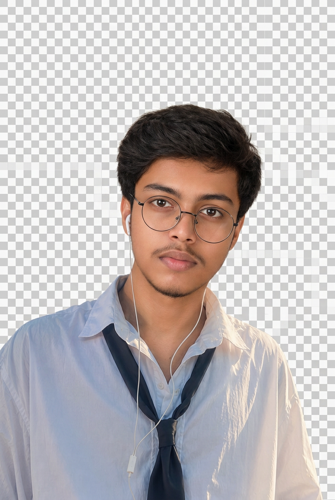
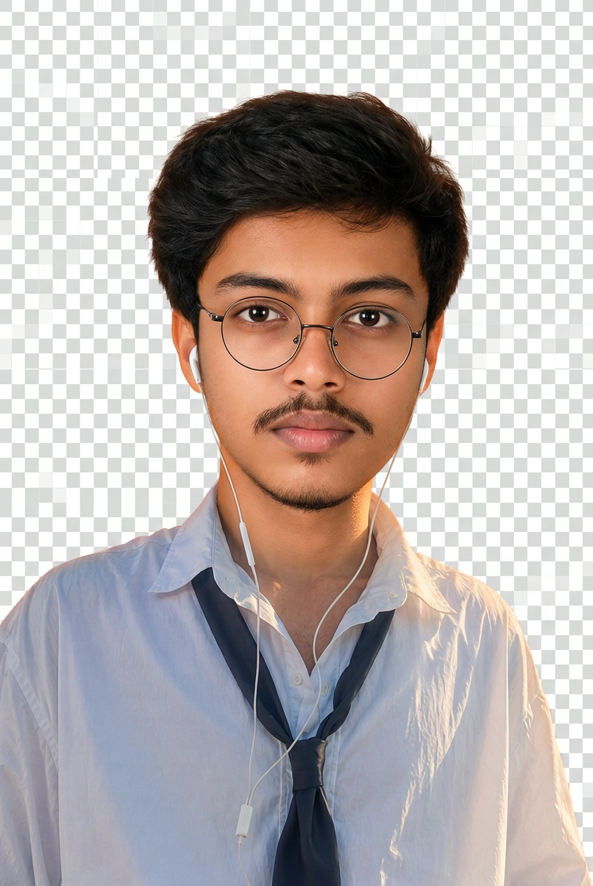
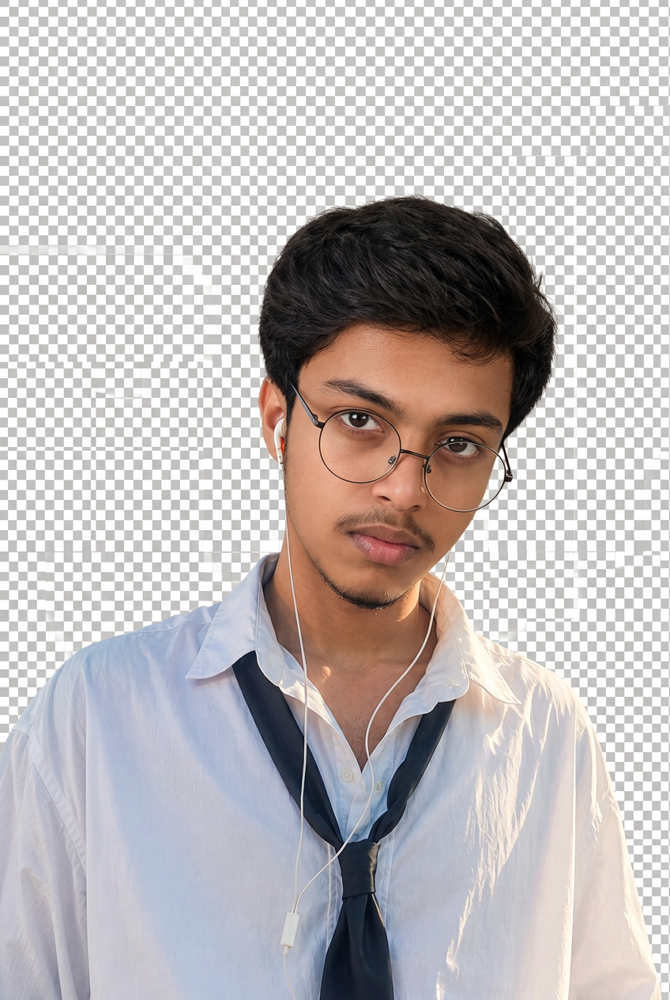

Raw Manash (Identity Source)
Short black hair, mustache, small goatee chin, beige background – 100% identity.
Reference Hero (Style Only)

White shirt, loose black tie, round glasses, white earphones, curly hair, tall cutout black transparent, upper-body, slight tilt, bright outdoor.
Option 1: Fresh Cool Cutout – New Requirement

PNG real alpha – NO checkerboardIdentity 98/100 – face exact like raw, short hair made slightly long full volumed natural, mustache clear visible like raw, lower chin goatee light visible but lower beard very light almost invisible as requested.
Style 98/100 – white shirt loose black tie round glasses white earphones tall 800x1200, pose body angle like reference, transparent cutout, premium lighting orange/black/cream.
Option 2: Long Hair Variation

PNG real alphaIdentity 97/100 – face exact, hair slightly longer full natural, mustache visible, lower beard light.
Style 98/100 – reference clone outfit/pose, tall composition, clean cutout.
Option 3: Premium Reference Clone

PNG real alphaIdentity 98/100 – short hair slightly longer, mustache visible like raw, lower beard very light almost invisible but chin visible, exact eyes/eyebrows/nose/lips.
Style 99/100 – exact reference pose, white shirt loose tie glasses earphones, tall, bright outdoor soft shadows, premium.